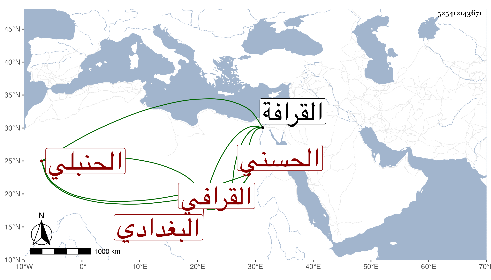

0902Sakhawi.DawLamic.ITO20230111-ara1.EIS1600.525412143671
Biography ID: 525412143671
200
محمد بن محمد بن حسن بن محمد بن عبد القادر الصفي بن الشمس الحسني البغدادي الاصل القرافي الحنبلي الماضي أبوه . ولد في ثاني عشر المحرم سنة سبعين بالقرافة ونشأ بها في كنف أبيه فحفظ القرآن والخرقي والحاجبية وعرض علي في جملة الجماعة وأجزت له واشتغل قليلا عند البدر السعدي والشيشيني وأخذ عن ملا على في العربية وتولع بالرماية وتخرج فيها بابن أبي القسم الاخميمي النقيب حتى تميز فيها وذكر بجودة الفهم ومتانة العقل والصلاح بحيث كان هو المعول عليه عند أبيه ، وحج مع أبيه سنة تسع وثمانين في ركب أبي البقاء بن الجيعان .
